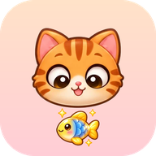
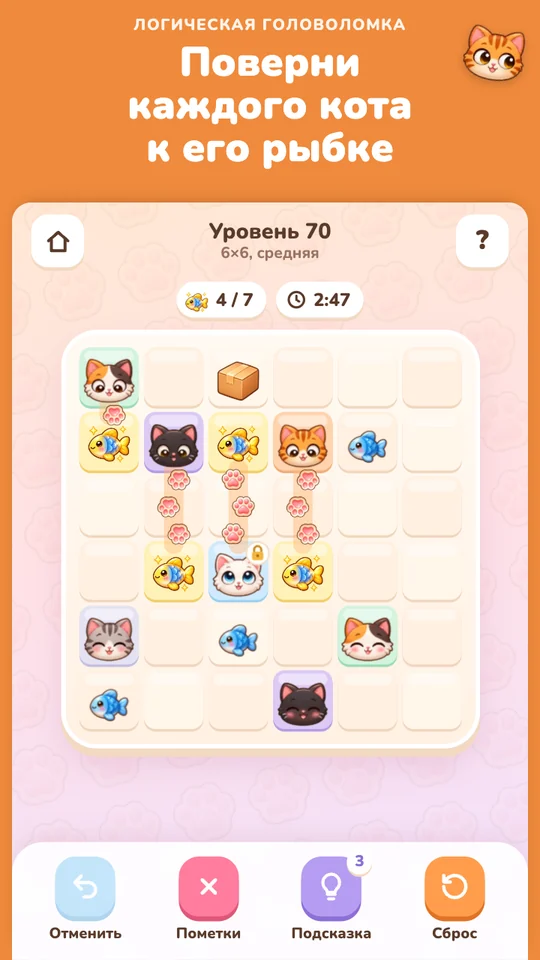
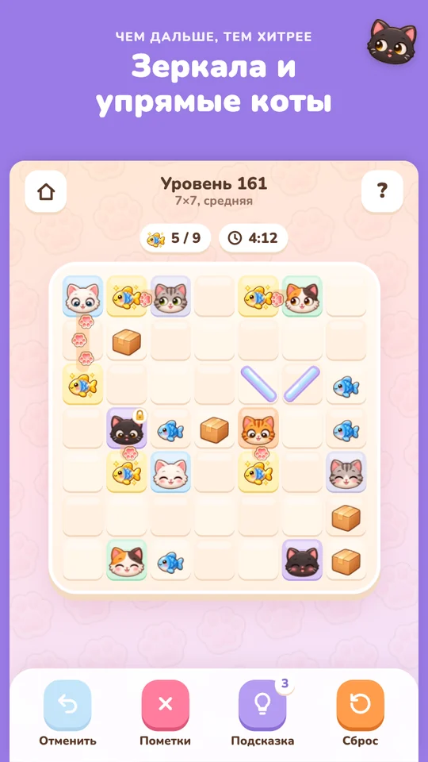
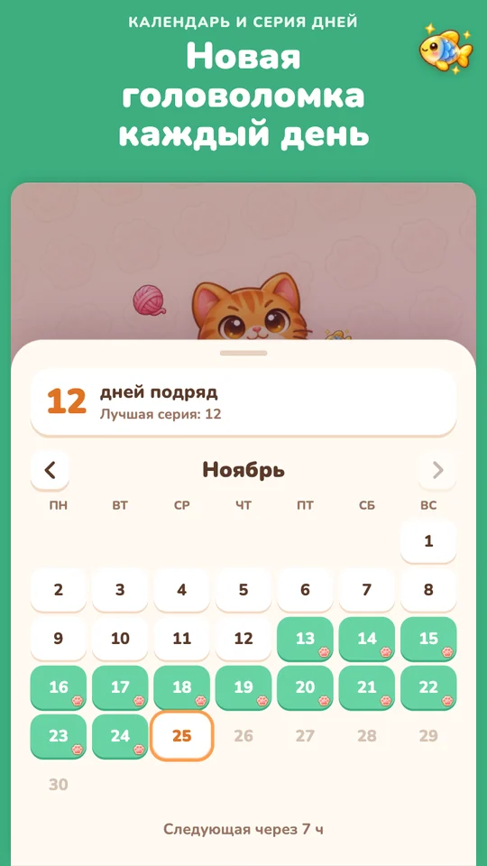
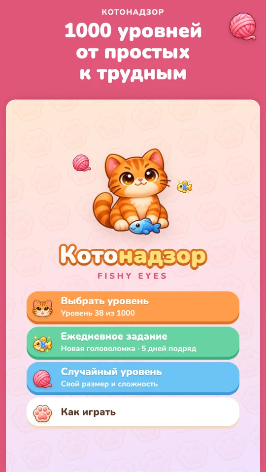

Поверни каждого кота к его рыбке
Логическая головоломка про котов и рыбок. Кот смотрит прямо перед собой и видит первое, что стоит у него на пути. Разверни котов так, чтобы у каждого была своя рыбка, а взгляды не пересекались. Угадывать не придётся: у каждого уровня одно решение, и к нему ведут рассуждения.
Попробуйте сами
Нажимайте на котов, чтобы развернуть их




Правила
- Поверни каждого кота к его рыбке.
- Одну рыбку стережёт один кот.
- Сквозь коробки и чужие головы не видно.
- Взгляды не пересекаются.
Что внутри
От маленьких полей 5×5 до больших 9×9, от простых к трудным. Открываются по порядку.
Каждый день новая головоломка, у всех одна и та же. Календарь, серия дней подряд и пропущенные дни.
Чем дальше, тем хитрее: зеркала поворачивают взгляд, а упрямого кота не развернуть.
Выберите размер поля и сложность, и игра сразу даст новую головоломку.
Отмечайте, куда кот точно не смотрит. Три подсказки на уровень, если застряли.
Уровни и задания дня уже внутри игры, сеть для них не нужна.